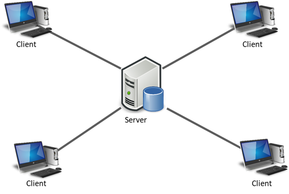

Contenido principal
Arquitectura cliente-servidor
¿Que es la arquitectura Cliente-Servidor?
Cliente-Servidor es uno de los estilos arquitectónicos distribuidos más conocidos, el cual está compuesto por dos componentes, el proveedor y el consumidor. El proveedor es un servidor que brinda una serie de servicios o recursos los cuales son consumido por el Cliente. En una arquitectura Cliente-Servidor existe un servidor y múltiples clientes que se conectan al servidor para recuperar todos los recursos necesarios para funcionar, en este sentido, el cliente solo es una capa para representar los datos y se detonan acciones para modificar el estado del servidor, mientras que el servidor es el que hace todo el trabajo pesado.
Front-End
¿Que es el Front-End?
El frontend es la parte del desarrollo web que se dedica a la parte frontal de un sitio web, en pocas palabras del diseño de un sitio web, desde la estructura del sitio hasta los estilos como colores, fondos, tamaños hasta llegar a las animaciones y efectos.
Es esa parte de la página con la que interactúan los usuarios de la misma, es todo el código que se ejecuta en el navegador de un usuario, al que se le denomina una aplicación cliente, es decir, todo lo que el visitante ve y experimenta de forma directa.
Un front-end, es la persona que se dedica básicamente al diseño web, pero esto no significa que no toque código, tanto el front-end como el back-end están en contacto con código todo el tiempo.
Dentro del área de front-end se trabaja con lenguajes mayormente del lado del cliente, como:
- HTML (lenguaje de marcado de hipertexto, se utilizan etiquetas que estructuran y organizan el contenido de la web).
- CSS (se encarga del formato y diseño visual de las páginas web escritas en html) para darle estructura y estilo al sitio.
- Javascript (un lenguaje de programación, rápido y seguro para programar centros de datos, consolas, teléfonos móviles o Internet) para complementar los anteriores y darle dinamismo a los sitios web.
¿Cuáles son los roles dentro del Front-End?
- UI Developer/Diseñador UI
- Web Designer/Maquetador
- Front-end Developer/Programador Front-end
¿Cual es la función de cada uno de los roles del Front End?
UI Developer / Diseñador UI
En este trabajo no se escribe nada de código, más bien todo se lleva a cabo en programas dedicados al diseño digital, como los programas que resaltan más arriba. Sin embargo, aunque todo sea diseño, esto no significa que cualquier diseñador gráfico pueda hacerse con el trabajo, ya que, por ejemplo, se necesita experiencia en la interacción del usuario con la página y se debe cuidar el buen funcionamiento de los flujos de cada proceso, para ello, se hacen reuniones con el equipo de desarrollo, así se puede estructurar bien el diseño de la página web y evitar futuros problemas, también debe considerar las pantallas a realizar para evitar problemas en los que las maquetas creadas no puedan ser llevadas a código. El UI Developer usualmente diseña siguiendo un esquema propuesto anteriormente en conjunción con el equipo de desarrollo, pues toda esta etapa hay que definirla y documentarse antes de empezar a crear las pantallas del sitio web.
Para poner en contexto el trabajo de un UI Developer, en YouTube, el se encargaría de diseñar la página Inicio del sitio, los menús desplegables, los botones de suscribirse, la posición y forma en que se muestran los comentarios, etc, así como del flujo que hay que seguir para pasar de una página a otra.
Web Designer / Maquetador
El trabajo del Web Designer es llevar las pantallas diseñadas por el UI Developer a código HTML y CSS, el cual se ejecuta al cargar la página web. Tener un buen código de HTML nos ayuda para la usabilidad y el marcado del sitio, además también mejora el posicionamiento de la página en los motores de búsqueda como Google o Bing, mientras que una buena sintaxis escrita en CSS está directamente relacionada con el rendimiento del sitio web y de las aplicaciones, por ello se necesita un amplio conocimiento de estos dos lenguajes.
Además, es recomendado tener conocimientos medios de JavaScript ya que, aunque no es muy común escribir código puro de dicho lenguaje sí que se utilizan bibliotecas de este, como React.js por ejemplo, cuya sintaxis (JSX) es muy parecida a HTML, lo cual hace que nos podamos familiarizar rápidamente a esta biblioteca.
Programador Front-end
Para este rol la programación se realiza casi enteramente en JavaScript, por lo que su conocimiento a profundidad es obligatorio, para ser más exactos, no es que se escriba código en JavaScript plano, sino que se utilizan diversas bibliotecas o frameworks de este lenguaje. En este punto es importante saber que los Front-end Developers se encargan de agregar la lógica al sitio web, ¿a qué nos referimos con esto? A que ellos o ellas implementan las API provenientes del Back-end o de algún otro servidor externo, las imprime en pantalla y les agrega validaciones para que puedan funcionar. En pocas palabras, se encarga de darle vida al sitio web internamente, por lo tanto, no debería de preocuparse por el diseño de pantalla, el tamaño o color de los botones de los sitios web, ya que de esto se encarga enteramente el UI Developer.
¿Cuáles son los principales lenguajes y frameworks usados en el Front- End?
- Programas que suelen ser utilizados: Sketch, Figma y Adobe XD.
- Lenguajes indispensables: HTML, CSS y JavaScript.
- Bibliotecas de JavaScript utilizadas: React.js, Vue.js, Angular.js
Back-End
¿Que es el backEnd?
Mientras que el frontend es la capa de programación ejecutada en el navegador del usuario, el backend procesa la información que alimentará el frontend de datos.
Es la capa de acceso a los datos, ya sea de un software o de un dispositivo en general, es la lógica tecnológica que hace que una página web funcione, lo que queda oculto a ojos del visitante.
El backend de una solución, determina qué tan bien se ejecutará la aplicación y qué experiencia, positiva o negativa, obtendrá el usuario de su uso.
¿Cuales son los roles del BackEnd?
- Backend Developer o Programador Backend
¿Cuál es la función de cada rol?
Backend Developer o Programador Backend
Hace toda la lógica del lado del servidor, toda la seguridad está en esta parte; si tú haces seguridad en el lado del cliente, una persona con relativos conocimientos de programación podría modificar esa validación desde el inspector del navegador, por eso también se agrega validación del lado del servidor y es muchísimo más segura. El programador Backend también se encarga de comunicarse con las bases de datos, para recuperar la información que luego se le enviará al Frontend.
¿Cuáles son los principales lenguajes de programación y frameworks del backend?
Los principales lenguajes y tecnologías web que representan el top del ranking son:
- PHP
- LUA+ OpenResty
- Python
- Asp.NET
- Java + OpenGSE
- Ruby + Ruby on Rails
- Javascript + NodeJS + ExpressJS
5¿Qué es un Stack? ¿Ejemplos de Stack?
Un stack tecnológico, también llamado stack de soluciones o ecosistema de datos, es una lista de todos los servicios tecnológicos utilizados para construir y ejecutar una sola aplicación.
Los desarrolladores hablan de stacks tecnológicos porque facilitan la comunicación de grandes cantidades de información sobre cómo se construye una aplicación. El término se aplica a veces a los servicios de marketing (stacks de MarTech) o a los servicios de ventas (stacks de ventas), pero se originó en la comunidad de desarrollo de software. Un stack tecnológico resume rápidamente los lenguajes de programación, los frameworks y las herramientas que un desarrollador necesita para interactuar con la aplicación.
El sitio social Facebook, por ejemplo, está compuesto por una combinación de frameworks de codificación y lenguajes, entre los que se incluyen JavaScript, HTML, CSS, PHP y ReactJS. Este es el “stack tecnológico” de Facebook.